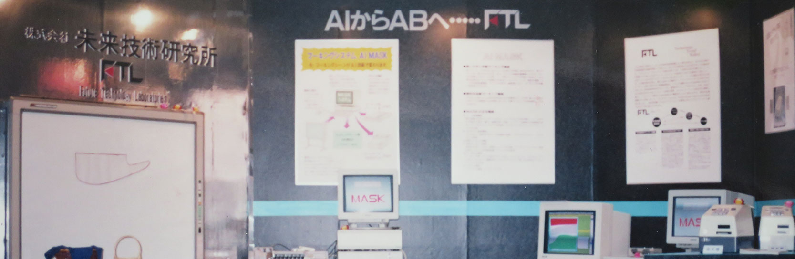

History
創業当初からAIのシステム開発に率先してチャレンジしてきました！
最近のAI関連の実績は守秘義務により詳細公開はできませんが、下記にある創業当初からの開発実績をご覧いただければ、当社の先進的な取組みがご理解頂けると思います。
新世代コンピューター技術開発機構(ICOT ※1)に参画
| 1985/9-1993/3 | ＩＣＯＴ（財・新世代コンピュータ開発機構）の中期計画に参画し、推論マシンによるＡＩによる囲碁ソフトの研究、開発に携わる |
| 1993/4-1995/3 | 国際ファジイ工学研究所で、ＩＣＯＴの継続研究 |
※1 ICOT(Institute for New Generation Computer Technology)
1982年に設立された新世代コンピューター技術開発機構。通商産業省（現経済産業省）が推進していた「第5世代コンピューター開発プロジェクト」の中核組織。並列推論マシンの開発などの一定の成果を残したが、1998年に解散したため先端情報技術研究所（AITEC）に引き継がれた。その後は先端情報技術調査・普及グループ（AITRG）によって、当該プロジェクトの実績や技術情報関が保全されている。
(出典 ASCII.jpデジタル用語辞典)
AI関連実績
| 1989 | AIによる型入れシステム「AI-MASK」をあいち21産業技術情報フェアに出展し、車のシートの形状カッティングや洋服の型紙販売の会社など30店舗以上にシステムを納品しました。  |
| 1990 | 大手エレクトロニクスメーカー主催のコンピュータフェアで「AI-MASK」や木造軸組み工法CAD／CAMシステム「きづくり名人ジンゴローI世」を発表・展示。大手住宅メーカー系列の木材プレカット工場に多数導入されました。 その効果で、当時人気のワークステーションのシステム販売に最も貢献した企業として表彰もされました。 |
| 1992 | AIによる個人プロファイル情報から業務マッチングする「人材発掘システム」を開発、大手エレクトロニクスメーカーの事業所に導入されました。 |
| 1993 | AIによるテスト問題自動作成機能を持つ教育アプリ「CAIソフト」を開発し、大手の教育系出版会社など複数企業に採用されました。 |
| 1995 | AIとファジーによる「チップ素子検査システム」を開発し、大手電子部品メーカーに納入しました。 |
| 1996 | 料理にあったワインを推奨するAIワインソムリエを開発し、大手食品メーカー主催のイベントで発表・展示されました。 |
| 1997 | AIで消火時の最適経路を推奨する「消防自動車配車システム」をカーナビ版で開発し、大手カーナビメーカーに納入しました。 |
コンピュータ囲碁大会で世界チャンピオンという弊社の実績
当社創業者の一人である林和芳氏は、当時囲碁4段という腕前でしたが、コンピュータの専門家としては、以前から碁を打てるコンピュータの実現を夢見ていました。
コンピュータで碁を打つには10 の700 乗ぐらいの猛烈な数の計算処理を高速に実行しなくてはならないので当時は不可能と言われていました。
1980年代になってパソコンが普及し、ある雑誌で米国の企業が囲碁ソフトの開発をしているという記事を見てすぐ米国に渡り、そこでミシガン大学がAI研究テーマとして囲碁をやっていること、さらには、囲碁のプログラムの優劣を競うイベントの存在を知って、林氏は世界で一番強いプログラムを作って競技に参加しようと決意したそうです。
その後、プログラム改良と競技会参加を続け、1988年(昭和63年)11月に台湾で開かれた応昌期囲碁教育基金会の世界大会(1985～2000まで開催)で、見事優勝し、世界チャンピオンになりました。
その当時、出始めのラップトップパソコンを肩に担いで行ったことも話題を呼んだそうです。